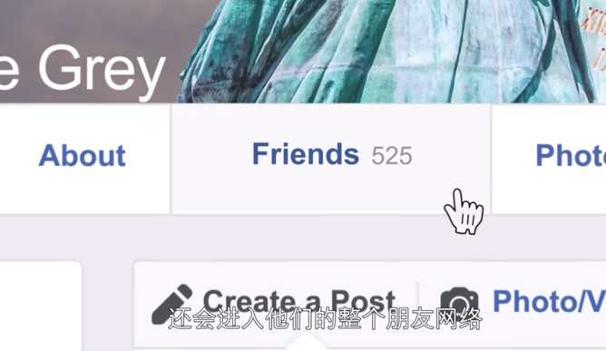
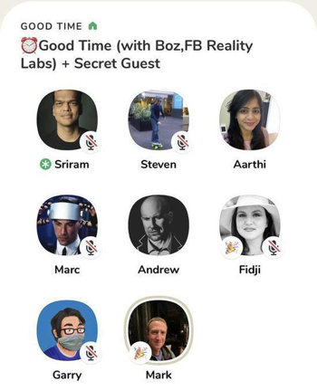

收录于合集 #政观书讯 16个
5月26日，有消息称欧盟将在数日内对Facebook展开反垄断调查, 以评估该企业是否破坏了在线分类广告市场的公平竞争。而这已经不是Facebook第一次受到政府机构的监管与调查了，早在2017年，欧盟就曾因Facebook在收购WhatsApp时提供误导性的隐私政策信息而处以其1.1亿欧元的罚款。且在2018年发生的剑桥分析（Cambridge Analytica）信息泄露事件，甚至直接将扎克伯格本人送上了美国国会听证会的受审席。在这场会议上他僵硬的表情和程式化的回答更是让“扎克伯格其实是机器人”的流言甚嚣尘上。
扎克伯格在18年国会听证会
事实上，近年来Facebook企业口碑经历了“断崖式”的下跌，接连受隐私泄露、虚假新闻和传播仇恨信息等丑闻影响，今年初的民调显示美国用户对其的满意度评分仅有10%。很显然，Facebook已经不再是10年前那颗硅谷冉冉升起的新星了，而这个拥有着20多亿用户的全球最大“社交帝国”究竟为何会跌下“神坛”，面临如今饱受信任危机的状况？CEO扎克伯格和他的团队在这一过程中的哪些决策与举动导致了这样的结果，并致使他本人“第一极客”的人设彻底崩塌？而他们又是怎样修复企业形象的？在美国首席科技记者史蒂文·利维历时3年深度追踪记录的新书——《Facebook:一个商业帝国的崛起与逆转》中，这一切皆有迹可寻。
一．一次轻易的纵容
长久以来，扎克伯格和Facebook保有着一种乐观的信念—— “人们相互连接和分享时，世界会变得更美好。” 而他们许多决策也是基于这一核心理念所作出的。例如扎克伯格早在2006年就提出的动态消息（News Feed）这一基于用户浏览偏好的服务，Facebook在动态消息中植入了能够让人沉迷的算法，只向用户展示他们感兴趣的的帖子，这样用户会在被推送的信息里进行“无限滚动浏览”。对于依靠广告投放盈利的Facebook来说这无疑是有利的，但同时也会加剧网络信息茧房的构成，催动民意的极化倾向。Facebook则完全忽略了这种“病毒式”推送所暗藏的危害，放任其操纵着用户陷入虚假新闻甚至仇恨信息的漩涡。
菲律宾的首席记者之一玛丽亚·雷萨（Maria Ressa）就曾控诉Facebook完全忽视了对虚假内容的监管，那些发布噱头十足、哗众取宠内容的人因尝到了甜头而愈发肆无忌惮。菲律宾总统候选人杜特尔特的支持者曾把他女性竞争者的头像嫁接到一位色情女演员身上，并在Facebook大面积传播。而为女候选人而发声的雷萨在平台上则遭受了大量杜特尔特拥趸的攻击与谩骂。“新闻人不说谎，但是谎言传播得更快。”雷萨说，事后尽管她多次投诉，但Facebook并没有采取任何措施去阻止这一切。
玛丽亚·雷萨 （左）
其实，传播虚假及有害消息的类似事件，在国内各大社交媒体上也屡屡发生。5月8日，国家网信办在公开新闻发布会上指出，某些组织群体为了自身利益在社交媒体上散布不实言论，教唆“饭圈”谩骂互撕，引导无节制“氪金”使不少青少年本末倒置，开始无底线追星。而这些乱象背后，社交媒体平台难辞其咎。不少网友表示对不良的网络风气“积怨已久”，许多平台正是“饭圈”病态生长的幕后推手，他们一心只考虑平台流量，不仅对不良言论视而不见，甚至有意推波助澜，从中觅取商机。
对于内容监管，Facebook高管安德鲁·博斯沃思的一份内部备忘录可谓是做足了反面教材。作者史蒂文·利维在书中记录，博斯沃思在这份宣言中姿态极高地强调了Facebook并不需要为不良信息造成的后果负责，而若不是一贯追求极致的增长，Facebook也无法成为一个实现世界互联的“伟大”产品。直到2019年3月，澳洲一位白人种族主义者在平台上发布自己残害清真寺祷告者的直播，彻底将Facebook的公众声誉打入地底，Facebook才开始后知后觉地意识到有害信息的严重性，增加了近万人的内容审核岗位。
枪击案嫌犯在Facebook的直播
Facebook在虚假消息与不良信息上的失误给与社交媒体行业的启示无疑是明显的，作为既得利益者，平台必须要肩负起必要的社会责任，而不能为了追求增长就对有害信息放任自流。
二．一个错误的决定
2018年3月17日，英美多家媒体披露，5000万Facebook用户的个人数据被泄露给了名为剑桥分析（Cambridge Analytica）的政治咨询公司，该公司通过人格测试应用程序收集了这些信息，并在2016年美国大选中“巧妙”利用它们帮助特朗普登上了总统之位。此消息一出，社会一片哗然，管理不善的Facebook一时间成为各界口诛笔伐的对象，企业声誉跌入谷底。
史蒂文·利维在书中记述了他与此次风暴中心的剑桥大学心理学研究员亚历山大·科根（Aleksandre Kogan）的谈话。科根坦言，他所编写的测试小程序确实挖掘大量了Facebook用户的个人隐私，但这却是被Facebook批准的开发者行为。Facebook当时使用的平台版本不仅让开发者可以访问用户的信息，还可以访问该用户好友的数据，包括他们的爱好和兴趣等详细资料。而在接下来的改版中，Facebook虽意识到了信息安全监管的疏漏，却仍旧没有立即锁定好友之间的信息，而是宽限开发者在一年期内继续侵犯用户隐私。科根正是在这一年的过渡期内，为剑桥分析公司筛选出了有用的信息，后者则将其提供给了特朗普的竞选团队。民众对于Facebook“纵虎归山”的行为空前愤怒，随之而来的反对舆论，和一夜蒸发的股价让Facebook第一次彻底乱了阵脚——公司高管在公关策略下甚至失声了5天。然而，美国国会对扎克伯格的传唤接踵而至，Facebook的“至暗时刻”到来了。
扎克伯格接受国会质询
事后，扎克伯格曾告诉《连线》杂志，Facebook发现人们并不拒绝分享自己的好友信息，但会警惕自己的隐私被窥探。因为用户留存在平台数据不仅是近期的，还包括多年积累下来的细枝末节。而Facebook在剑桥分析危机中最大的错误就是低估了用户隐私的宝贵程度。事件发生的过程中Facebook正在着力完善他们的“增长黑客”计划，这一计划美其名曰能够通过算法不断提升用户体验，真实的目标却是更好地操纵用户的注意力，提高他们的存留时间，以博得广告商的青睐。在这里用户已经不再是活生生的人，而只是一个又一个指标罢了。对增长的极致追求，已经让Faceook屏蔽了对用户信息安全的一切考量。

剑桥分析事件纪录片《隐私大盗》
对用户隐私的傲慢看法、贪婪的操纵，以及纵容平台上有误导性和煽动仇恨的内容。所有这些缺陷，都是过去 10 年Facebook各方面的决策所造成的结果，此外包括采取各种手段激励用户分享、扩大覆盖范围以及超越竞争者。而剑桥分析公司的事件犹如一块被搬开的石头，底下掩藏的肮脏和乱窜的害虫瞬间暴露无遗。
三．一场形象的挽救
最近，不少人注意到扎克伯格个人的Facebook帖子内容变得丰富有趣了许多，在介绍新产品、新表情包的同时还不忘调侃几句频繁抢占头条的比特币。
近年接连不断的负面事件导致Facebook外界口碑受挫，内部士气低迷。扎克伯格决心要修复公司受损的形象。不知是否受到“硅谷钢铁侠”马斯克成功营销自己个人IP的启发，扎克伯格的形象挽救大计准备先从转变自己呆板严肃的人设开始。除了在个人主页上更新多样化的帖子，他还声明称将多在媒体前露面，亲自探讨Facebook的产品和创新，确保Facebook工作的积极面被尽可能的凸显出来。例如今年2月，他就突然现身在爆火全球的语音社交软件Clubhouse上，与房间内的众人谈论疫情之下，如何通过VR耳机实现员工远程办公，吸引的巨大流量一度让当晚Clubhouse的服务器崩溃。

事实上，扎克伯格和Facebook在数年前就已经走上了企业形象修复之路。他们开始强调社交媒体平台内容的筛选与监管，2017年扎克伯格题为《建立全球社区》的公开信中承认了公司旧使命——“令世界更加开放和彼此连接”是有盲点与严重缺陷的。他说，未来Facebook将更多地考虑与人建立联系后会发生什么，并设法更好地管理这些影响。扎克伯格曾认为，“没有隐私，世界会更美好”，而现在他终于推翻了自己的这个设想。人们在社交平台上分享了更多的信息，但这并不意味着也分享了理解，更不代表着大家就更亲密了。Facebook当前的任务是建立“社区”（Community）以帮助持有不同观点的用户建立共识发生联系，同时监管与审核内容，让人们在平台上公开信息、参与政事等变得更安全与包容。
另一方面，Facebook也因其枉顾企业道德，一味追求利益增长的行为而饱受诟病。众议员玛克辛·沃特斯（MaxineWaters）的就曾对扎克伯格的牟利动作发表过尖锐的批评：“看起来你正在积极扩大公司规模，并愿意踩着任何人的肩膀，包括你的竞争对手、女性、有色人种、你自己的用户，甚至我们的民主，以便能得到你想要的东西。”
扎克伯格曾一直以桀骜不驯的极客形象示人，Facebook在创立之初的核心口号便是要破除规范，实现全球的社交互联。而在这个社交王国不断壮大的过程中，人们开始怀疑，扎克伯格确实关心将人们联系到一起，但远不如为自己和投资者尽可能多地赚钱来得重要。即便如今正在尽可能地挽回团队与自身的形象，但在公众和监管机构的眼中，他似乎早已丢弃了用科技造福世界的初衷。完成了急速扩张和惊人的财富积累，却损害了公众的利益导致企业形象的坍塌，这一结果抛给扎克伯格和Facebook的问题是严肃且亟待解决的：究竟企业的使命是由其核心价值还是牟利本能所决定的？这一问题，也同样普适于全球所有正在增长的现代企业。
四．两点反思
史蒂文·利维在开篇客观而犀利地写道“Facebook所面临困境都源于两件事——连接世界的宏大使命，以及鲁莽匆忙地实现这一使命的做法。因此纵览本书关于Facebook的揭秘与解析，有两点是可以被总结的：
其一，企业的目标设定必须全面考虑现实因素，切忌过于理想化。
正如扎克伯格在创立“连接世界”的Facebook之初并不会想到有人会利用它传播假新闻、煽动仇恨甚至操纵选举一样，许多新兴企业的领导者只看见了市场需求与商业机遇，却忽略了危机四伏的现实世界。我们必须承认，当一个企业有着造福世界的理想时，它是创新且伟大的。然而在过于理想化的目标下的发展只会是一次乌托邦式的计划，企业极易在现实社会里触礁，导致形象受损乃至全面崩塌。因此企业在设置自己的核心目标和价值时，也务必做好危机管理，充分考虑现实因素。即使致力于改变世界，也要顺应世界的规律。
其二，企业在发展的过程中不能只顾盈利，还需承担应有的社会责任。对于成功的企业来说，商业技巧和经营才干固然重要，但事实证明，打造企业可持续竞争力，还需要将经营准则与社会目的联系在一起。倾听消费者的需求，关心个人与全社会的发展，能够让企业更好地输出自己的价值观，并与公众建立良好的联系。相对的，如果一味追求增长而忽视了应担负的社会责任，舆论的反弹将格外强烈。互联网时代，消费者的权益维护意识和机构的监管力度都在不断提高。毕竟，没有人甘愿，也没有人应该成为被资本收割的“韭菜”。
扎克伯格在《建立全球社区》公开信的结尾引用了美国前总统林肯的话：“过往平静时期的教条，不足以应对暴风雨般的现在。面对困难重重的局面，我们必须与时俱进。因为我们面对的是全新的情况，所以我们必须重新思考、重新行动。”对于Facebook来说，前路仍旧波诡云谲，而对于全球的互联网乃至更多领域的企业来说，Facebook的跌宕起伏的故事无疑有着极其深刻的参考价值。
本文综编自《Facebook：一个商业帝国的崛起与逆转》中信出版社2021年5月出版
编辑：郭静远